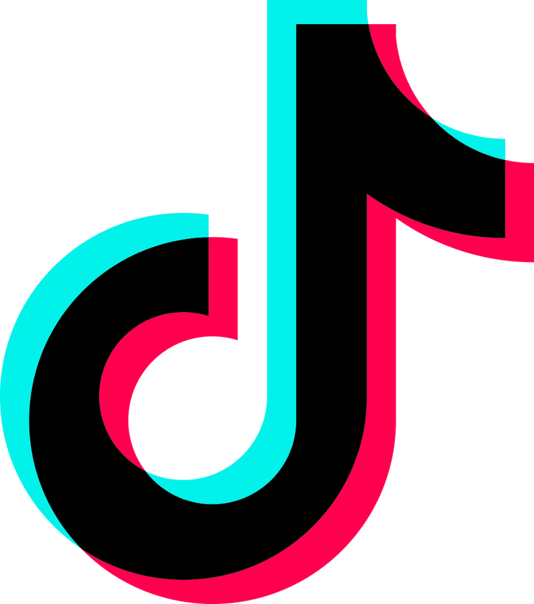
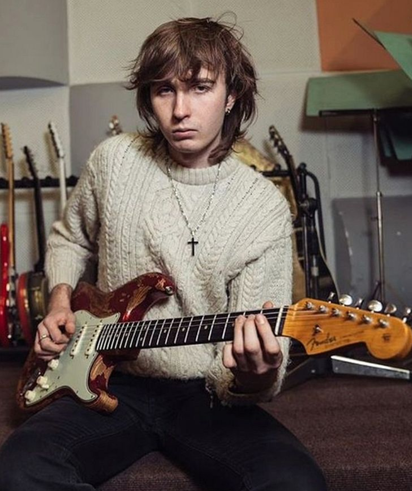
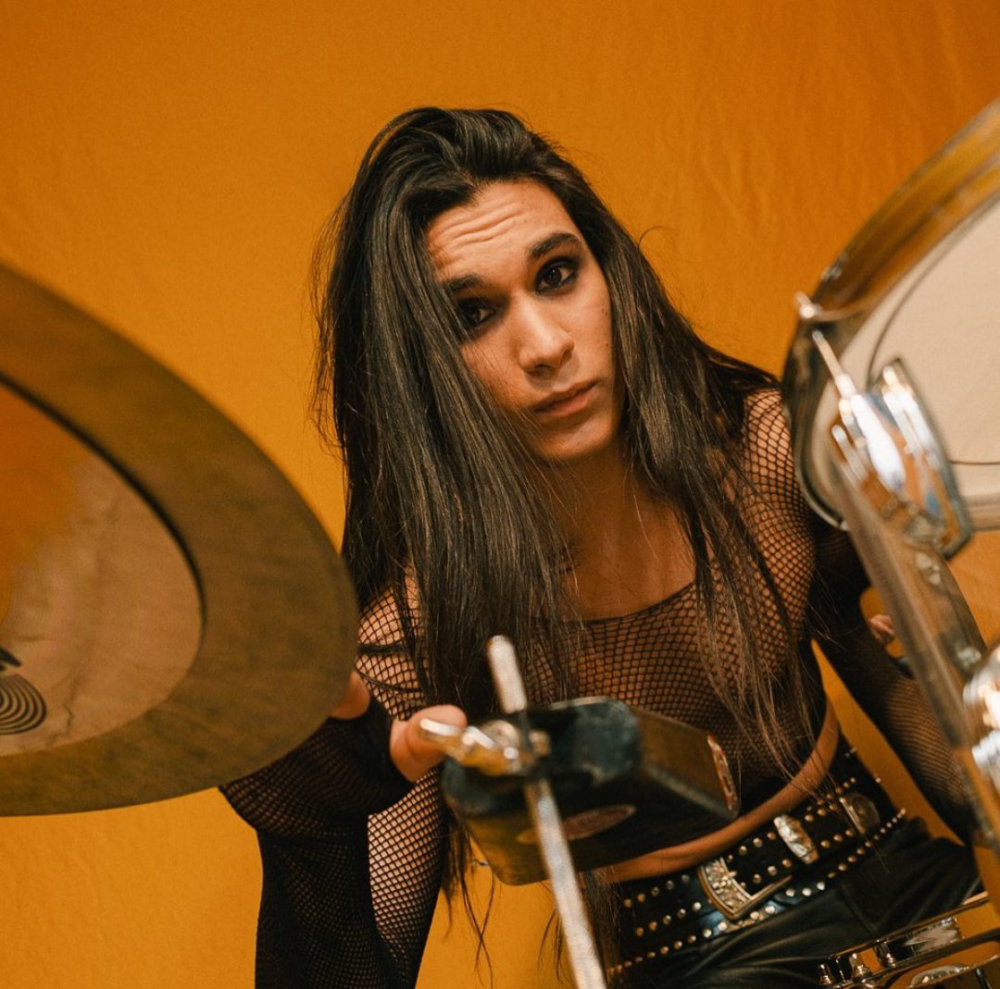

Es un cantante y compositor italiano conocido por ser el vocalista de la banda de rock italiana Måneskin, que ganó el Festival de Música de Sanremo 2021 y el Festival de la Canción de Eurovisión 2021


@victoriamaneskinEs una bajista y compositora italiana, fundadora de la banda de rock Måneskin en 2016 junto con el guitarrista Thomas Raggi

Es un guitarrista de rock and roll que saltó a la fama como miembro de la banda italiana Måneskin. Sus compañeros de banda junto a él, son reconocidos por haber sido coronados como los vencedores del Festival de Eurovisión 2021. Antes de la fama Conoció a sus compañeros de banda cuando iban al instituto en Monteverde, Roma. Eligieron su nombre tras inscribirse en el concurso local Pulse.

Es romano como el resto de sus compañeros de la banda y comenzó a demostrar sus dotes para la música cuando tenía cinco años, destaca por su larga melena negra y su cuidado estilo, que ha conquistado a miles de fans en toda Europa. Tiene más de nueve hermanos y el haberse criado en una familia tan grande le ha enseñado a saber formar parte de un equipo
Haciendo clic a reproducir en el siguiente audio podremos escuchar la cancion con la que este grupo gano Eurovisión 2021(Zitti E Buoni):
A continuación podemos ver algunas de las canciones de este grupo con el año en el que se estrenaron
| Discografía | |
|---|---|
| Año | Canción |
| 2017 | Chosen |
| 2018 | Il Ballo Della Vita |
| 2019 | Fear for Nobody |
| 2020 | Vent'anni |
| 2021 | Teatro D'Ira - Vol.I |
| 2021 | I Wanna Be Your Slave |